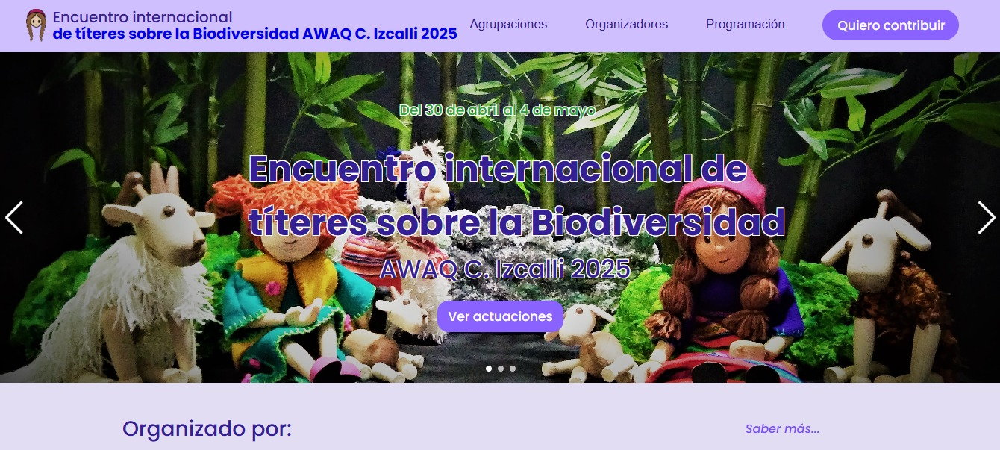
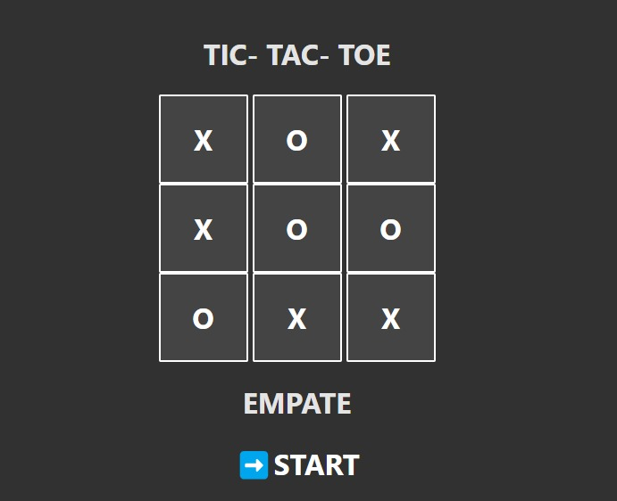

Sobre mi:
Desarrolladora web en constante aprendizaje, estudiando Sistemas Informáticos en la Universidad Tecnológica Nacional (UTN). Mi enfoque principal es el desarrollo de software, una disciplina que me apasiona porque me permite resolver problemas, optimizar procesos y crear soluciones digitales que mejoren la experiencia de los usuarios.
Durante mi formación, he tenido la oportunidad de trabajar en proyectos interesantes como el desarrollo de aplicaciones web e-commerce para pequeñas y medianas empresas (PyMEs) en el marco de la Fundación Pescar. En este proyecto, tuve la oportunidad de involucrarme en áreas como diseño web, optimización del rendimiento y gestión de frameworks y librerías, utilizando herramientas como HTML, CSS, JavaScript, y React.js.
Además de mis estudios universitarios, también he completado varios cursos y certificaciones en áreas clave como Full-Stack Development, Testing QA/QC y Análisis de Datos, a través de plataformas como Valtech, Google-Coursera y Coderhouse. Esto me ha permitido enriquecer mis conocimientos y crecer como profesional.
Soy una persona comprometida, flexible y con un enfoque colaborativo. Me encanta trabajar en equipo, compartir ideas y aprender de los demás. Mi objetivo es encontrar un entorno que fomente tanto mi crecimiento personal como profesional, donde pueda aportar mis habilidades y entusiasmo para contribuir al éxito de un equipo.
Contacto
Tecnologías:
Front-end:


Back-end:


Otros:


Proyectos
Tic-Tac-Toe
Encuentro Internacional de Títeres 2025 – Plataforma Web para Recaudación de Fondos
Desarrollé una página web para el Encuentro Internacional de Títeres 2025, un evento cultural internacional organizado por AWAQ ONG-D, durante mi pasantía. La plataforma facilita la recaudación de fondos y la difusión, brindando información clara y accesible sobre el evento.
Utilicé tecnologías modernas como React, JavaScript y CSS para construir una interfaz interactiva y responsiva, adaptada a dispositivos móviles y de escritorio. Implementé componentes dinámicos para mejorar la experiencia del usuario y fomentar la participación.
Este proyecto me permitió aplicar y fortalecer habilidades en desarrollo frontend, diseño UI y gestión de estado, dentro de un contexto real con impacto social y cultural.
Grow
Página web de e-commerce enfocado en la comercialización de productos y servicios para pequeñas y medianas empresas (PyMEs) y emprendedores. Ofrece una plataforma accesible, eficiente y funcional para potenciar la visibilidad de los productos y servicios de los usuarios, mejorando su alcance y posicionamiento en el mercado digital.
Tic-Tac-Toe
Proyecto interactivo del clásico juego "TA-TE-TI", desarrollado como una práctica de diseño y programación. Este proyecto combina habilidades en desarrollo front-end y lógica de programación, haciendo un diseño intuitivo con una experiencia de usuario fluida.